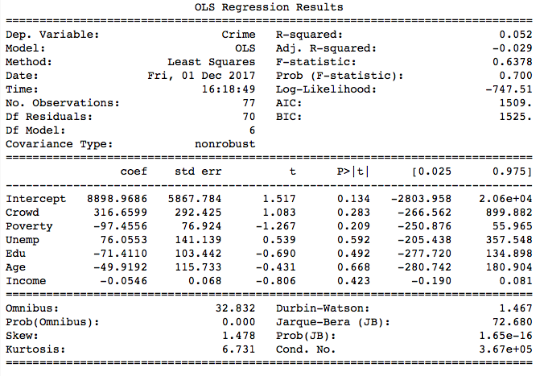

First, we plot the number of total crime on different socioecomonic indicators to explore the relationships between them.
Then we run two regression models. Below is the result for regression of crime on six socioecomonic indicators with logit transformation:

Generally, the results are not ideal. It seems that different socioecomonic aspects have no statistically significant effect on the incidence of crime, which is out of our expectation.
Type:
Conclusion:
Discussion: